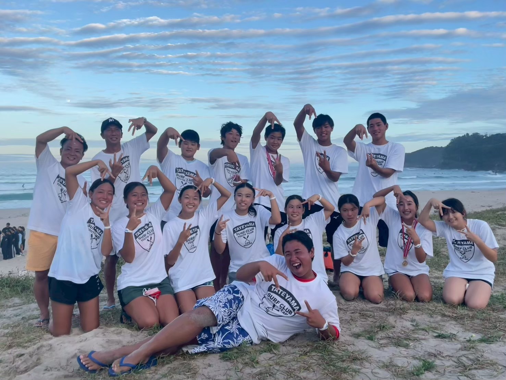
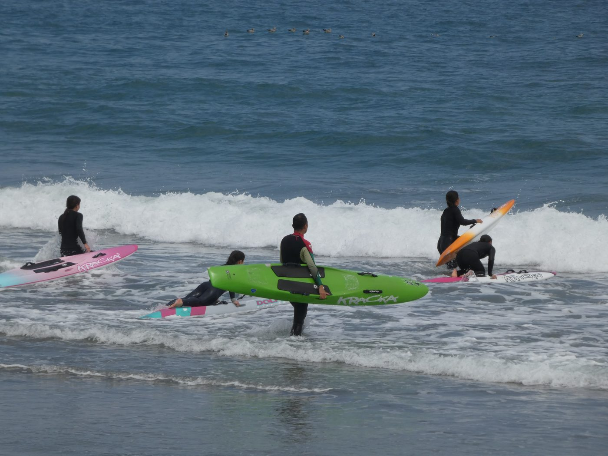
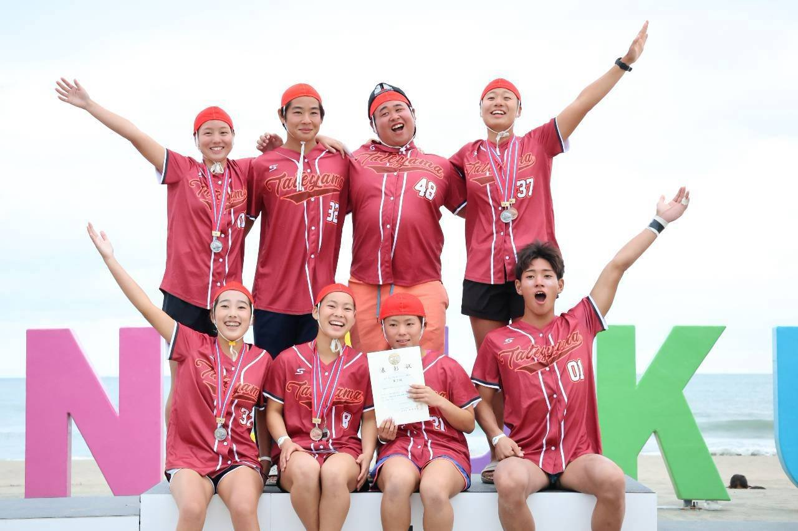
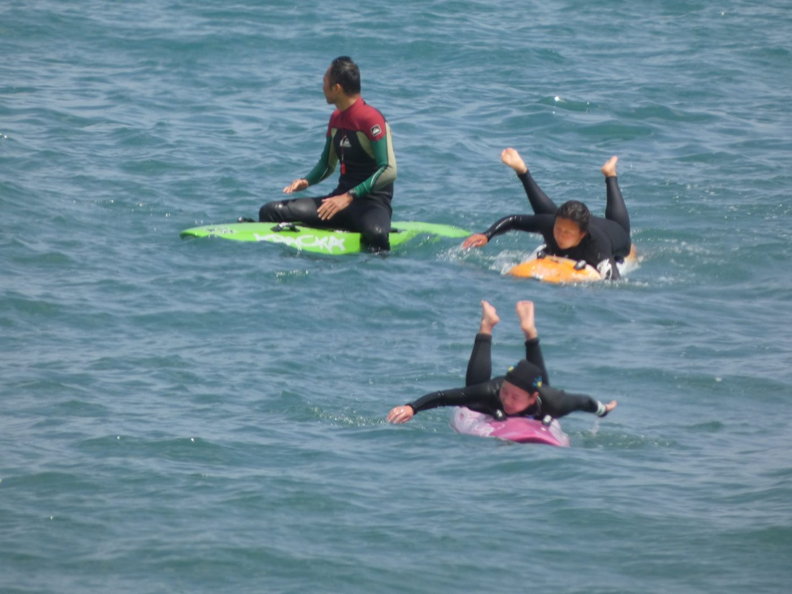
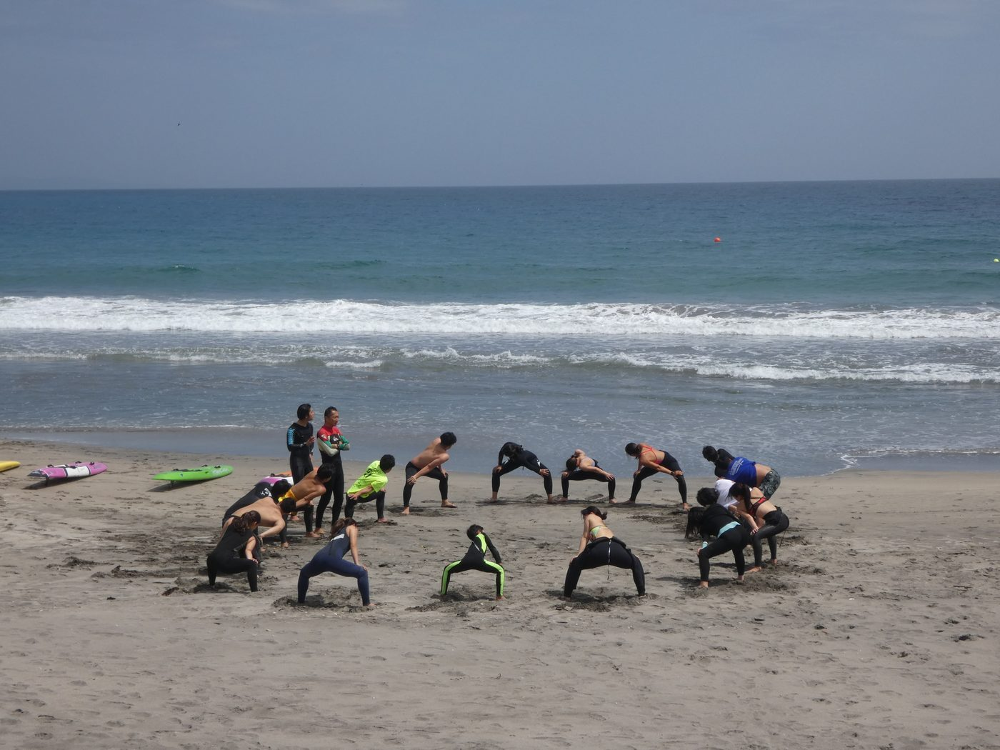
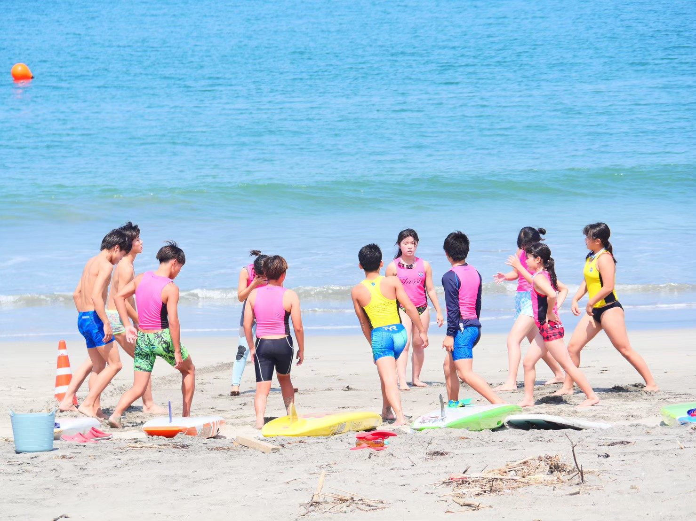
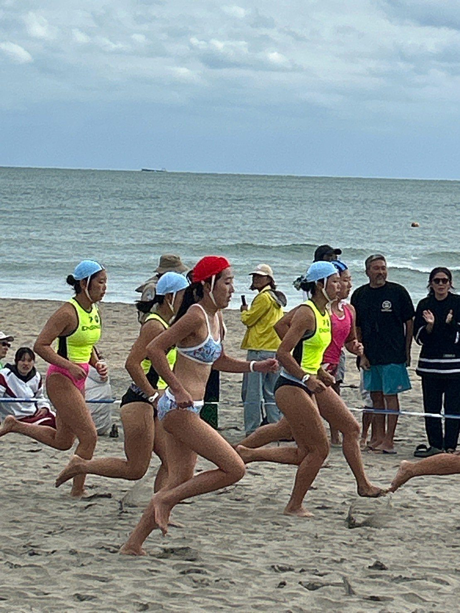
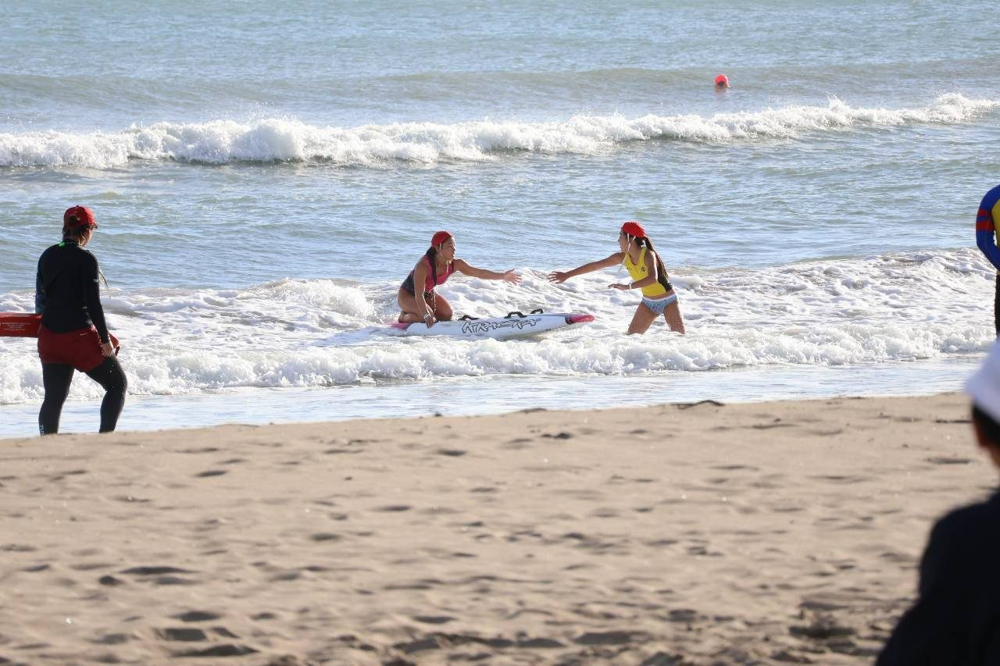
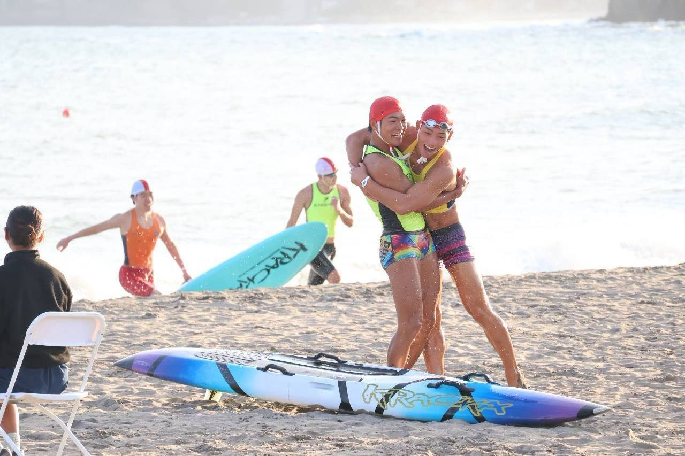

次世代のライフセーバーを育てる。中学生・高校生の本格トレーニングです。
育成部は、中学生・高校生を対象に、より本格的なトレーニングで次世代のライフセーバーを育成するプログラムです。
2026年度に「ユース」から「育成部」へ名称が変わりました。


海での実践的な練習で、ライフセービングの技術と体力を高めます。







| 年会費（中学生） | 3,000円 |
| 年会費（高校生） | 5,000円 |
| 月会費（定額） | 3,000円 / 月 |
| 都度参加 | 2,000円 / 回 |
| 初回体験 | 1,000円 |
参加費は「月会費（定額）」か「都度参加」のどちらかをお選びいただけます。年会費はスポーツ保険料で、クラブ本体・普及部・育成部のいずれに所属してもお支払いは年1回です。
満3歳〜小学生の入門プログラムは 普及部 をご覧ください。
まずは見学・体験から。海で一緒にトレーニングしましょう。